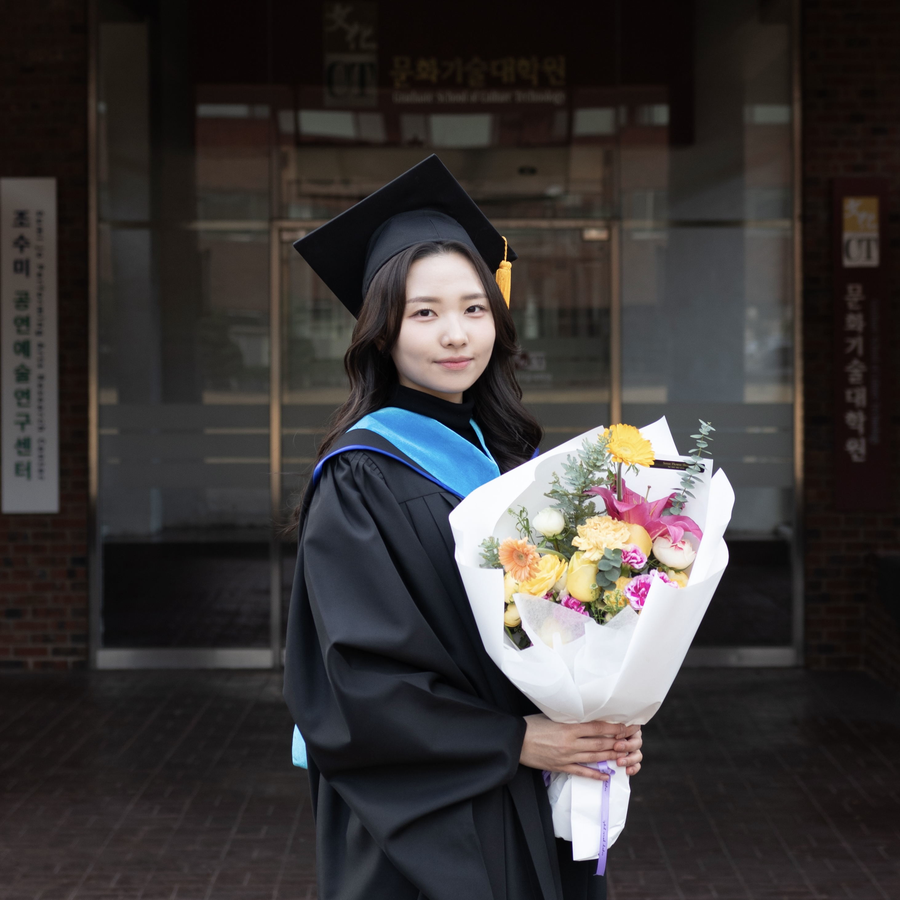
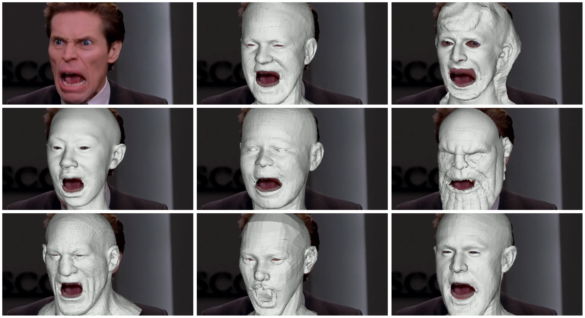
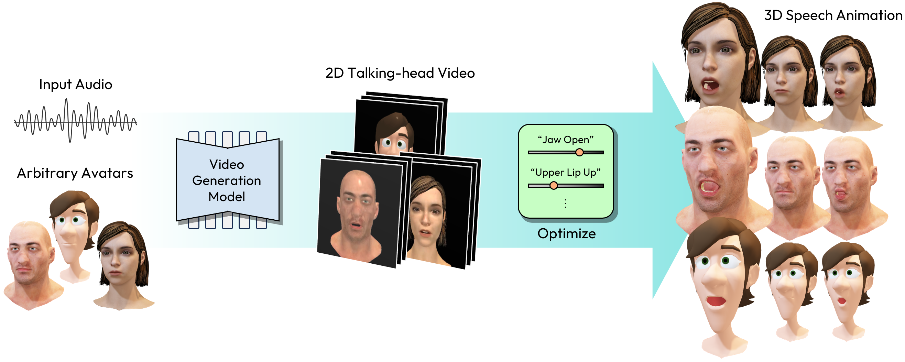
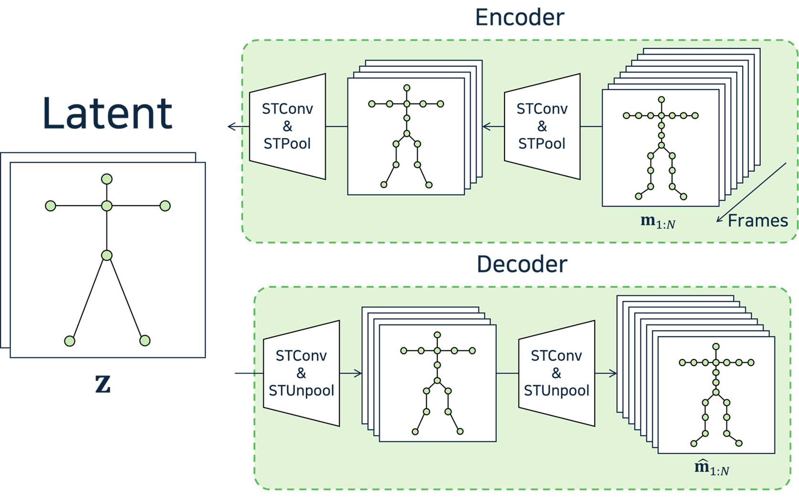
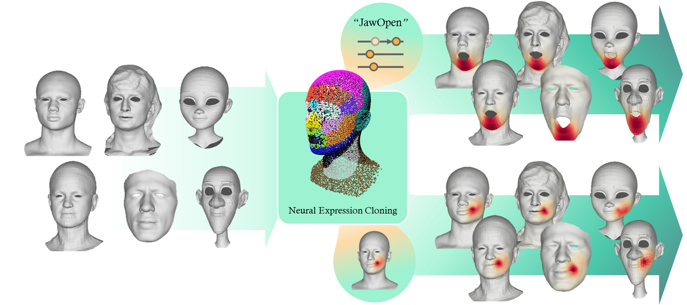
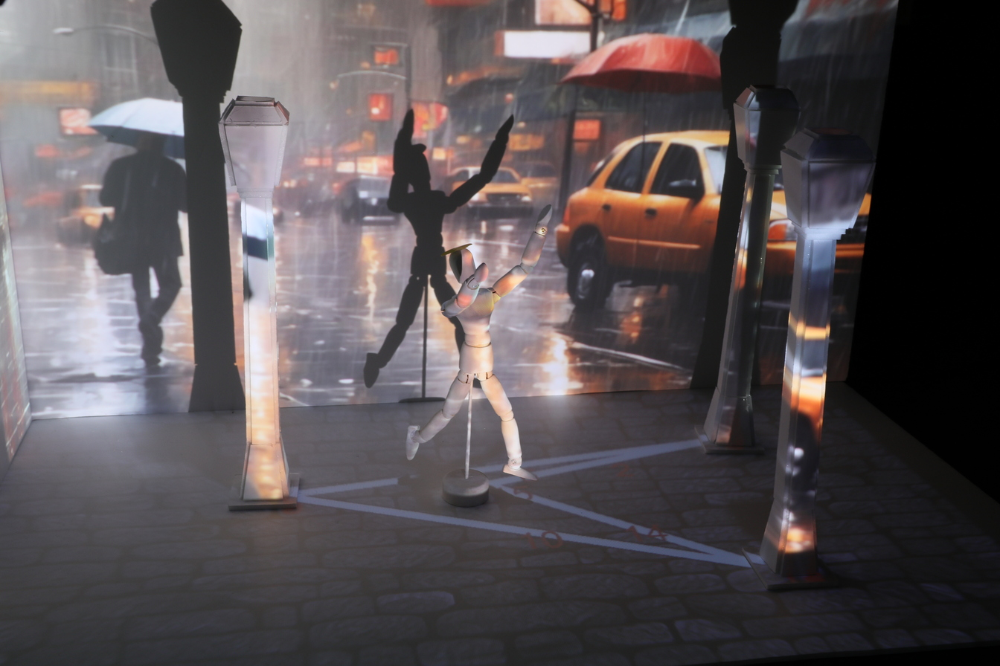
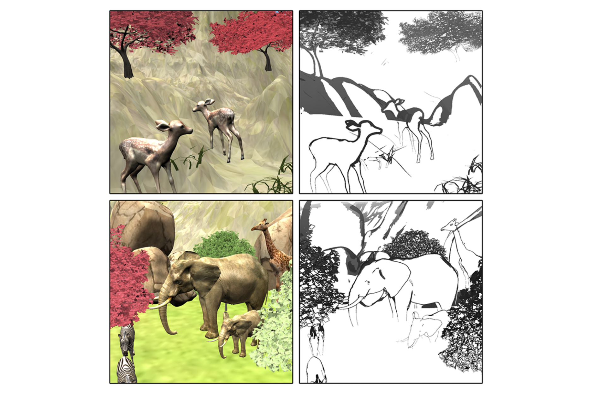
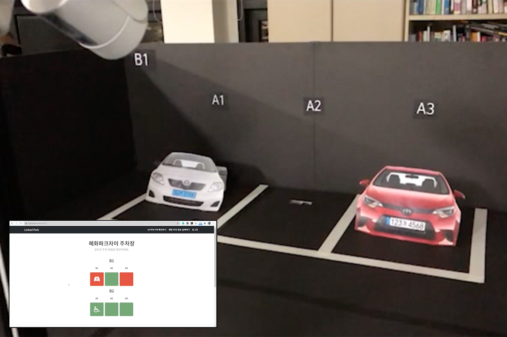

|
Serin Yoon Hello! I recently completed my Master’s degree at GSCT KAIST, where I conducted research in the Visual Media Lab under the supervision of Prof. Junyong Noh. My research interests lie in Computer Graphics and Computer Vision, particularly focusing on 3D Character Animation. I am passionate about deriving meaningful insights and results through the use of geometric data. |
 |
{kind=link}
Publications |
|
 |
Anymate: Animating Arbitrary 3D Faces from Video
First Author In submission
[Paper]
[Project Page]
An animating method that enables smooth and identity-preserving animation of arbitrary 3D faces from in-the-wild video. |
|
 |
AnyTalk: Speech Animation for Arbitrary Characters Leveraging a Video Generation Model
Co-First Author In submission
[Paper]
A data-free method that generalizes realistic, lip-synced 3D speech animations for arbitrary characters using video diffusion models. |
|
 |
SALAD: Skeleton-aware Latent Diffusion for Text-driven Motion Generation and Editing
Seokhyeon Hong, Chaelin Kim, Serin Yoon, Junghyun Nam, Sihun Cha, Junyong Noh CVPR 2025 A method that incorporates interactions between joints, frames, and words for text-driven motion generation and zero-shot editing. |
|
 |
Neural Face Skinning for Mesh-agnostic Facial Expression Cloning
Sihun Cha, Serin Yoon, Kwanggyoon Seo, Junyong Noh Eurographics 2025, CGF A method that enables direct retargeting between two facial meshes with different shapes and mesh structures. |
|
 |
Simulation Tool for Theatrical Scene Design Using Generative AI
Meongeun Kim*, Eunbyul Park*, Serin Yoon*, Jaehong Ahn (*equal contribution) KCGS 2024 Poster Best Poster Award
[Paper]
Simulation tool that leverages Generative AI to assist in staging musical scenes by simulating stage direction and design. |
|
 |
Relative Depth-Based Oriental Black Ink Style Rendering
Minseong Kim, Serin Yoon, Sangmin Kim, Sungkil Lee KCGS 2022 Poster
[Paper]
A rendering technique for generating ink-painting style edge images based on relative depth differences between object boundaries. |
|
 |
Edge Computing based Cloud Parking Management System
Gilhan Park, Heedong Kim, Serin Yoon, Jaehwan Lee, Soyeon Jeong KIPS 2021 Edge-computing cloud system that automates tasks like entry/exit tracking and unauthorized parking detection. |
Education |

|
Korea Advanced Institute of Science & Technology
Master of Culture Technology (Advisor: Junyong Noh, GPA: 4.0/4.3) Mar 2024 - Feb 2026 |
|
|
Sungkyunkwan University
Bachelor of Computer Science Education (GPA: 3.91/4.5) Mar 2019 - Feb 2024 |
Experiences |

|
Visual Media Lab
Student Researcher Mar 2024 - Feb 2026 |
|
|
Mirim Girl's High School
Information Science Student Teacher Apr 2023 - May 2023 |
Projects |
|
|
Generating Hyper-Realistic to Extremely-stylized Face Avatar with Varied Speech Speed and Context-based Emotional Expression
Sep 2024 - Feb 2026 Development of customizable AI avatars that generate responsive, conversational facial animations, enabling lifelike interaction and feedback through intuitive user inputs. |
|
|